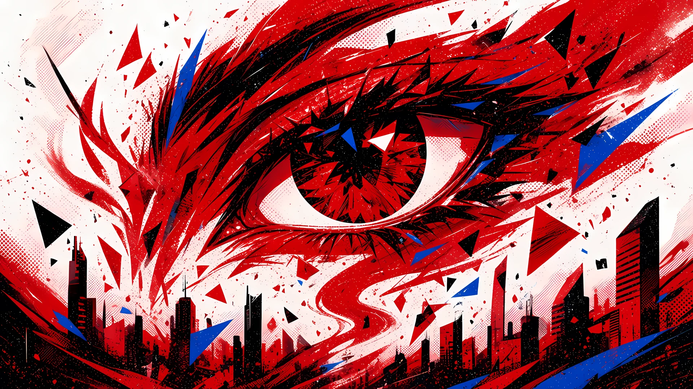
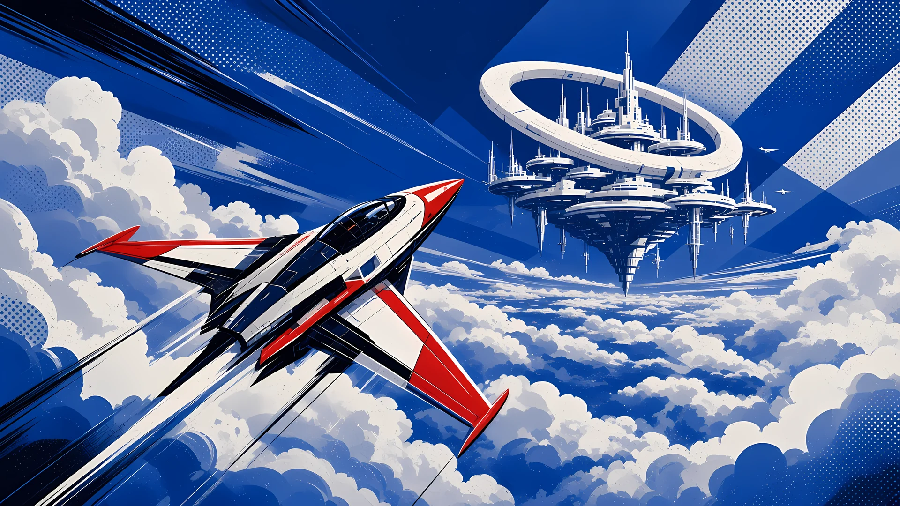
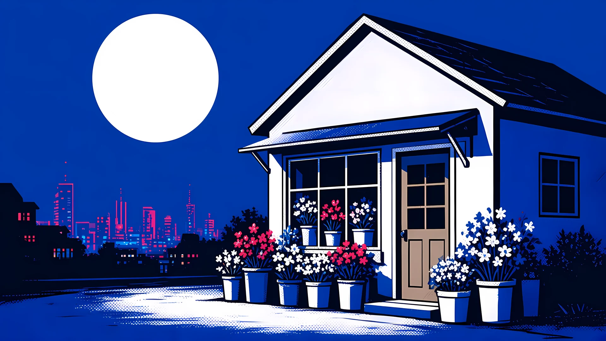

按总档已有的骨架排列
故事
没写完的部分不替作者续写，锁着的就是还没有答案。
- 10故事线
章节选择
故事线
 纸飞机组陈小钰、伊伦·布林克跨年龄、跨阶层的相互欣赏与特殊友谊。正史已经结束。再见了，所有的人类与美梦们小Y、达里奥·维塔莱小Y的终章。Y 的死亡成立。
纸飞机组陈小钰、伊伦·布林克跨年龄、跨阶层的相互欣赏与特殊友谊。正史已经结束。再见了，所有的人类与美梦们小Y、达里奥·维塔莱小Y的终章。Y 的死亡成立。 幻梦之种思惟诺姆、达里奥·维塔莱、小Y、德可可Y 留下的种子，在达里奥的思想里生根，涌现出新的存在。
幻梦之种思惟诺姆、达里奥·维塔莱、小Y、德可可Y 留下的种子，在达里奥的思想里生根，涌现出新的存在。
克拉拉与兰斯特洛克拉拉、法涅斯·阿玻吕恩、兰斯特洛街角被救起的少女，眼睛里寄生着红潮之眼。 逃往新比伦德兰缇斯·斯诺、菲利克斯·兰达失去记忆的少女，从德兰塔逃到世界最大的城市。
逃往新比伦德兰缇斯·斯诺、菲利克斯·兰达失去记忆的少女，从德兰塔逃到世界最大的城市。 洛安与天钴安天钴洛安·笛卡儿、珀松·笛卡尔第一次红潮夺走了她的父母，她发明了治后遗症的药。
洛安与天钴安天钴洛安·笛卡儿、珀松·笛卡尔第一次红潮夺走了她的父母，她发明了治后遗症的药。
洛芙洛芙·托马斯探索者协会的秘书长，曾是特种兵。
望月若叶凛医疗事故后返乡开花店的急救医生，和来自深海传说的旧友。 陈家陈小钰、陈绍衡、林启明有过父女情分的敌人，和一位宠她的舅舅。
陈家陈小钰、陈绍衡、林启明有过父女情分的敌人，和一位宠她的舅舅。 循环与终结琴、弥塞尔·艾奥涅斯、璇、凪打破循环，寻求真正的终结。
循环与终结琴、弥塞尔·艾奥涅斯、璇、凪打破循环，寻求真正的终结。版本边界
版本边界
这些来源保留版本边界，不自动定案。
《源界世界观与势力设定集》2026-10-02 候选稿，首页说明其扩展或候选性质；本档主要用来保留版本边界。候选稿
《源界完整主线剧情》2026-10-02 候选稿。候选稿
10 月 3 日至 11 月 8 日的更新人物定名、地理更正、关系设定与终章更新按较新记录归入对应条目。
《终焉回响》与《源界》分别建档，跨作品联系只记录已经明确的接口。